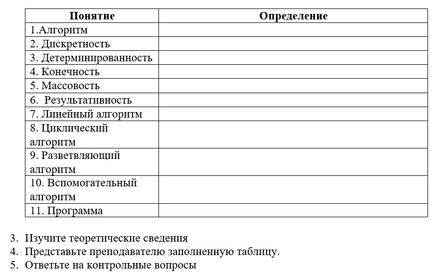
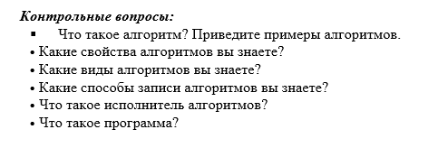
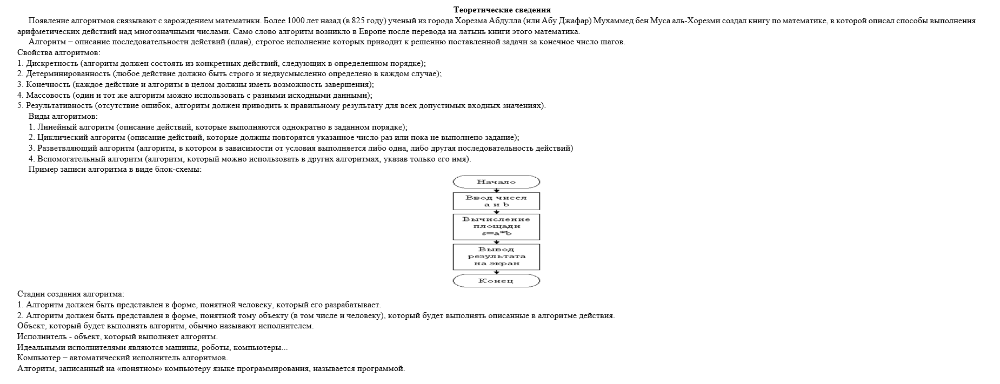

Задания для 1 курса. Практическое занятие №2
Понятие алгоритма. Алгоритмы: линейные, с ветвлением, с повторением. Способы записи алгоритма: словесное описание, блок-схема. Составление алгоритмов.   Линейные алгоритмы на языке Паскаль
|